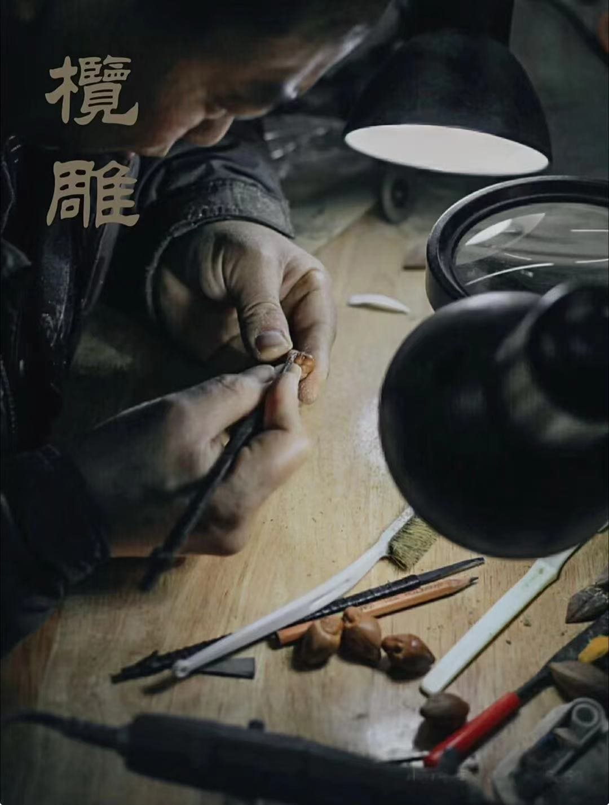

微观乾坤，核雕传奇
|  |
直播介绍微观乾坤，核雕传奇 —— 直播探秘指尖上的绝技 一颗小小的果核，能容纳怎样的大千世界？是峻峭巍峨的山川，还是古灵精怪的神佛罗汉？是精巧细腻的花鸟鱼虫，还是波澜壮阔的历史故事？ 来直播间开启一场震撼心灵的核雕艺术之旅！ 毫厘之间显匠心：亲眼目睹核雕大师如何在方寸果核之上，运用刻刀精雕细琢。从构图设计的巧思，到每一刀的精准落位，分毫之间尽显极致匠心，见证微雕艺术的神奇魔力。 文化传承细聆听：深入探寻核雕这一古老技艺的历史渊源，了解其在岁月长河中如何传承与发展，感受核雕所蕴含的深厚文化底蕴与人文精神，领悟传统手工艺的独特魅力与价值。 实时互动赢珍品：直播过程中，您可以随时提问，与大师进行互动交流，解开心中关于核雕艺术的谜团。更有机会参与幸运抽奖，赢取珍贵核雕作品或专业核雕工具套装，开启属于您的核雕创作之路！ |